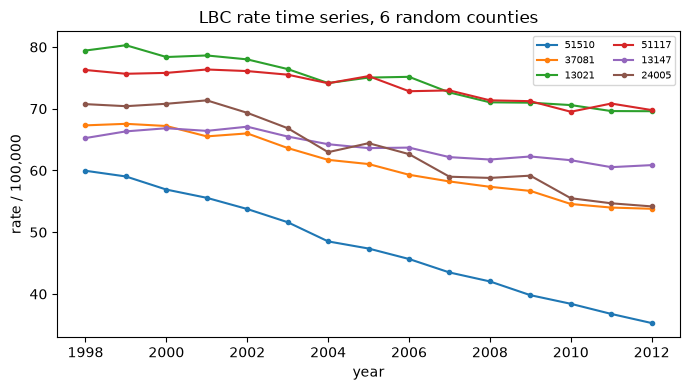
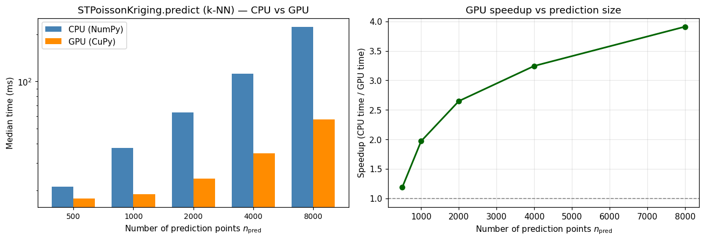

Spatio-temporal Poisson kriging extends Goovaerts’ Poisson kriging from a single map of areal rates to a panel: the same counties observed every year. Each observation is an area-year \((v_i, t_i)\) with a rate \(z(v_i,t_i)\) and a population \(n(v_i)\). The estimator is still a Best Linear Unbiased Estimator of the latent risk \(R\), but the covariance now depends on both a spatial lag and a temporal lag, and the Poisson reliability term still down-weights small-population counties.
pygstat.STPoissonKriging combines the population-reliability diagonal of PoissonKriging with the space-time covariance engine of pygstat.krige_st (a Python port of gstat’s krigeST). This notebook tests it on lung/bronchus cancer mortality along the North Atlantic seaboard, 1998–2012, then times the k-NN batched solve on the national LBC panel.
Step
What we do
Data
666 counties × 15 years of LBC rates; one population figure per county
Split
Hold out 60 counties entirely (~9%); train on the remaining 606
Variogram
Empirical space-time semivariogram; fit a metric ST model
ST Poisson kriging
Fit STPoissonKriging; predict with a local neighbourhood
Validation
Predict every held-out county-year vs a naive-mean baseline
Forecast
Predict 2013 (one year past the observed window)
CPU / GPU
Time STPoissonKriging.predict on national LBC + US_COUNTY.shp
2. Theory - Why Poisson Kriging
Each county’s mortality rate is computed from a count over a population at risk,
where \(d\) is the observed count, \(n\) the population at risk, \(R\) the underlying (latent) risk, and \(B\) a rate base (e.g. \(100{,}000\)). Because a Poisson count has \(\mathrm{Var}(d)=\mathbb E[d]\), the rate itself is heteroscedastic:
A county with a small population has a far noisier rate than one with a large population, even if their true underlying risk is identical. Kriging the raw rate ignores this and lets small, noisy counties distort the map. Poisson kriging (Goovaerts, 2006) corrects for this by folding \(\mathrm{Var}(z(\mathbf u_i))\) into the kriging system itself, as a population-dependent term on the diagonal.
3. Theory - Ordinary Kriging with a Poisson Reliability Term
The risk estimator is linear, \(\hat R(\mathbf u_0,t_0)=\sum_i\lambda_i\,z(\mathbf u_i,t_i)\), with the usual unbiasedness constraint \(\sum_i\lambda_i=1\). The weights solve
with prediction \(\hat R=\boldsymbol\lambda^\top\mathbf z\) and kriging variance \(\sigma^2 = C(0) - \boldsymbol\lambda^\top\mathbf v_0 - \mu\). This is exactly pygstat.poisson_kriging.PoissonKriging, restricted to areas observed once (no time dimension).
4. Theory - Space-Time Covariance
An area-year panel (the same 666 counties, each observed every year from 1998–2012) needs \(C\) as a function of both a spatial lag \(h_s=\lVert\mathbf u_i-\mathbf u_j\rVert\) and a temporal lag \(h_t=|t_i-t_j|\). This notebook uses the metric space-time model (Pebesma, 2012), the simplest choice when there is no strong prior for separate spatial/temporal structure: space and time are folded into one joint (anisotropic) distance
\[
h_{st} = \sqrt{h_s^2 + (a\,h_t)^2},
\]
where \(a\) (stAni, units of space per unit time, e.g. meters/year) makes space and time commensurable, and a single ordinary variogram/covariance model \(C(h_{st})\) is fit to it. pygstat.st_variogram_models also implements separable, productSum, and sumMetric space-time models for cases with distinct spatial/temporal structure.
The empirical semivariogram is the Matheron estimator, binned jointly by spatial and temporal lag:
where \(N(h_s,h_t)\) collects area-year pairs whose spatial distance falls in the \(h_s\) bin and whose time difference equals \(h_t\).
5. Theory - Spatio-Temporal Poisson Kriging
STPoissonKriging combines Sections 3 and 4: the kriging system of Section 3, but with \(C\) the fitted space-time covariance of Section 4 (via pygstat.krige_st.cov_fn_st), evaluated on a local neighbourhood of the number_of_neighbors nearest area-years in a scaled \((x, y, a\cdot t)\) space. It reduces to PoissonKriging when every area has one time stamp, and to plain space-time ordinary kriging when every population is equal.
6. Python Setup
6.1 CPU and GPU
STPoissonKriging.predict solves a local space-time Poisson-kriging system at every prediction point. Every point has the same neighbor count \(k\), so pygstat stacks the systems into one (n_{\mathrm{pred}}, k+1, k+1) batched xp.linalg.solve — NumPy on CPU, CuPy on GPU. Pass use_gpu='auto'|True|False to the constructor.
Argument / method
What it controls
use_gpu
Batched k-NN ST Poisson-kriging solve (NumPy or CuPy).
predict
k-NN stacked solve; GPU when use_gpu is true.
predict_id
Leave-one-out of a single area-year; stays on CPU.
use_gpu is:
Value
Behaviour
'auto' (default)
GPU when CuPy can run a kernel on this card. Falls back to CPU otherwise.
True
Force GPU. Warns and falls back to CPU if CuPy is missing or cannot run a kernel.
False
Always CPU (NumPy/SciPy).
This notebook probes the GPU once with cupy_gpu_usable() and stores the result in USE_GPU. The Atlantic maps in §7–15 use use_gpu='auto'. §16 times CPU vs GPU on the national LBC panel (LBC_1998_2012_USA.csv joined to US_COUNTY.shp).
Install CuPy with pip install pygstat[gpu] (CUDA 11) or pip install cupy-cuda12x for CUDA 12.
Code
%matplotlib inlineimport sys, os, warningswarnings.filterwarnings("ignore")sys.path.insert(0, os.path.abspath("../src"))import numpy as npimport pandas as pdimport geopandas as gpdimport matplotlib.pyplot as pltimport pygstatfrom pygstat import STPoissonKriging, empirical_st_variogram, fit_metric_st_variogramfrom pygstat.st_variogram_models import vgm, vgm_st, variogram_linefrom pygstat.utils.backend import CUPY_AVAILABLE, cupy_gpu_usableprint("pygstat version:", pygstat.__version__)# ── ST Poisson k-NN batched solve: CPU / GPU dispatch (CuPy) ───────────────────# cupy_gpu_usable() runs a real kernel (not just `import cupy`). Older cards can# import CuPy and still fail at compile time; those stay on CPU.USE_GPU = cupy_gpu_usable()if USE_GPU:import cupy as cpprint(f"CuPy : {cp.__version__}")try: name = cp.cuda.runtime.getDeviceProperties(0)["name"]ifisinstance(name, bytes): name = name.decode()print(f"GPU (CuPy) : {name}")exceptException:print("GPU (CuPy) : available")print("Backend : GPU (CuPy) — STPoissonKriging k-NN batched solve on GPU")else:if CUPY_AVAILABLE:import cupy as cpprint(f"CuPy : {cp.__version__} (installed, but cannot run a kernel on this GPU/CUDA setup)")else:print("CuPy : not installed (pip install pygstat[gpu] or cupy-cuda12x)")print("Backend : CPU (NumPy)")print(f"use_gpu : {USE_GPU}")# --- running test log, rendered as a styled summary table at the end ---RESULTS = []def record(test, status, details=""): RESULTS.append({"Test": test, "Status": status, "Details": details})print(f"[{status}] {test} -- {details}")
data/lbc_atlantic.csv — wide panel, one row per county (FIPS), one column per year 1998–2012, age-adjusted lung/bronchus cancer mortality rate per 100,000.
data/COUNTY_ATLANTIC.shp (+ .dbf/.shx/.prj) — the 666 county polygons, with FIPS and projected centroid attributes x, y (Albers Equal Area, meters).
data/lbc_rate.csv — supplies each county’s population (pop), which COUNTY_ATLANTIC.shp does not carry.
Population caveat.lbc_rate.csv gives one population figure per county (its approximate population over the study period), not a year-by-year series. True Poisson kriging needs population at the time of each count; lacking that, population is treated as constant across 1998–2012 for every county — a limitation of the available data, not of the method.
Code
atlantic = pd.read_csv("../data/lbc_atlantic.csv")year_cols = [c for c in atlantic.columns if c !="FIPS"]ok = (atlantic.shape[0] ==666) and (not atlantic.isna().any().any())record("Load lbc_atlantic.csv (wide rate panel)", "PASS"if ok else"FAIL",f"shape={atlantic.shape}, years={year_cols[0]}-{year_cols[-1]}")atlantic.head()
fig, ax = plt.subplots(figsize=(7, 4))sample_fips =long["FIPS"].drop_duplicates().sample(6, random_state=0)for fips in sample_fips: sub =long[long["FIPS"] == fips].sort_values("year") ax.plot(sub["year"], sub["rate"], marker="o", ms=3, label=str(fips))ax.set_xlabel("year"); ax.set_ylabel("rate / 100,000")ax.set_title("LBC rate time series, 6 random counties")ax.legend(fontsize=7, ncol=2)plt.tight_layout()plt.show()

9. Train / Test Split
To validate genuine spatial-temporal extrapolation, 60 counties (~9%) are held out entirely — none of their years are seen during training — and predicted purely from their space-time neighbours among the remaining 606 counties.
10. Empirical Semivariogram and Space-Time Model Fit
empirical_st_variogram needs a complete area × time matrix (every county observed every year); this holds for the training panel since whole counties — not scattered county-years — were held out.
Code
train_wide = train.pivot(index="FIPS", columns="year", values="rate").sort_index()train_coords = (train[["FIPS", "x", "y"]].drop_duplicates("FIPS").set_index("FIPS") .loc[train_wide.index][["x", "y"]].to_numpy())years = np.sort(train["year"].unique()).astype(float)emp = empirical_st_variogram(train_coords, years, train_wide.to_numpy(), n_space_bins=12)ok = (len(emp["dist"]) >0) and np.all(np.isfinite(emp["gamma"])) and np.all(emp["gamma"] >=0)record("Empirical space-time variogram estimation", "PASS"if ok else"FAIL",f"{len(emp['dist'])} (space-bin, time-lag) cells from {emp['np'].sum():.0f} pairs")
[PASS] Fit STPoissonKriging (auto-detected rate_base) -- rate_base=100000
12. Validation on Held-Out Counties
Predict every county-year of the 60 held-out counties from their nearest space-time neighbours among the 606 training counties, and compare against a naive baseline (the overall training mean rate, i.e. no spatial or temporal information at all).
Ten random training area-years, each re-predicted with itself excluded from its own neighbour search — a basic sanity check that predictions track observed values without exactly reproducing them (they should be shrunk toward the local space-time mean, not copied).
Code
sample = train.sample(10, random_state=0)loo = pd.DataFrame([stpk.predict_id(row["FIPS"], row["year"], number_of_neighbors=30)for _, row in sample.iterrows()])loo["observed"] = sample["rate"].to_numpy()ok = np.isfinite(loo["zhat"]).all() and (loo["sig"].fillna(0) >=0).all()record("Leave-one-out sanity check (10 training area-years)", "PASS"if ok else"FAIL",f"mean|zhat-observed|={np.mean(np.abs(loo['zhat']-loo['observed'])):.2f}")loo[["id", "year", "observed", "zhat", "sig"]]
[PASS] Leave-one-out sanity check (10 training area-years) -- mean|zhat-observed|=5.84
id
year
observed
zhat
sig
0
13033.0
2009.0
78.010072
73.443756
9.658588
1
36085.0
2008.0
53.816414
44.483592
9.652530
2
13023.0
2002.0
88.713051
74.796863
9.614405
3
37197.0
2011.0
67.353474
67.344757
9.788954
4
13181.0
2003.0
78.440312
72.865224
9.787427
5
13061.0
2007.0
65.153307
76.995327
9.795494
6
45089.0
2012.0
71.256596
68.008491
9.942256
7
37031.0
2011.0
69.517268
65.657153
10.160801
8
10005.0
2006.0
68.024194
70.850971
9.813167
9
13119.0
2009.0
71.449173
68.271225
9.682998
14. Forecast Beyond the Observed Range
Predicting a year past the observed 1998–2012 window is pure temporal extrapolation using the fitted space-time covariance — the space-time analogue of kriging a location past the edge of a spatial survey.
[PASS] Forecast beyond observed range (2013) -- predictions=[85.66, 63.84, 63.8]
FIPS 54043: 2012 observed=102.89 -> 2013 forecast=85.66 +/- 10.36
FIPS 13121: 2012 observed=46.79 -> 2013 forecast=63.84 +/- 10.26
FIPS 51570: 2012 observed=63.75 -> 2013 forecast=63.80 +/- 10.16
15. Error-Handling Checks
STPoissonKriging should fail loudly, not silently, on bad inputs.
Code
try: stpk.predict_id(999999, 2000) record("Error handling: unknown (id, time) in predict_id", "FAIL", "no exception raised")exceptValueErroras e: record("Error handling: unknown (id, time) in predict_id", "PASS", str(e))
[PASS] Error handling: unknown (id, time) in predict_id -- (id=999999, time=2000) not found in the fitted data
Code
try: bad_pop = train["pop"].to_numpy().copy() bad_pop[0] =0 STPoissonKriging(fitted_model).fit(train[["x", "y"]].to_numpy(), train["year"].to_numpy(float), train["rate"].to_numpy(), bad_pop, ids=train["FIPS"].to_numpy()) record("Error handling: non-positive population in fit()", "FAIL", "no exception raised")exceptValueErroras e: record("Error handling: non-positive population in fit()", "PASS", str(e))
[PASS] Error handling: non-positive population in fit() -- populations must be strictly positive
Code
try: stpk.predict(np.array([[0.0, 0.0]]), np.array([2005.0]), number_of_neighbors=1) record("Error handling: too few neighbors raises ValueError", "FAIL", "no exception raised")exceptValueErroras e: record("Error handling: too few neighbors raises ValueError", "PASS", str(e))
[PASS] Error handling: too few neighbors raises ValueError -- Not enough space-time neighbors to build a kriging system (got 1); increase number_of_neighbors or check the data.
16. CPU vs GPU Poisson Kriging Timing
The 666-county Atlantic application is too small for a GPU comparison: host→device copies dominate a stack of modest \((k+1)\times(k+1)\) systems. Here we time k-nearest-neighbor space-time Poisson kriging (STPoissonKriging.predict) on CPU (use_gpu=False) versus GPU (use_gpu=True) using the national lung/bronchus cancer mortality panel.
Data:
Join data/LBC_1998_2012_USA.csv (3,107 counties × years 1998–2012) to data/US_COUNTY.shp on FIPS. Coordinates are NAD 1983 Albers metres (same CRS as the polygons).
The LBC CSV has no population column, and US_COUNTY.shp does not carry one either. County population is joined from data/usa_diabetes_data.csv (POP_Total) and treated as constant across years — the same proxy used for Atlantic lbc_rate.pop. rate_base=100000.
Hold a metric ST model fixed (Atlantic-scale exponential parameters). Fitting \(\gamma\) is not in the times. Draw a separate prediction set in the county bounding box × 1998–2012.
The k-NN GPU work scales with \(n_{\mathrm{pred}}\) (one stacked solve of shape (n_pred, k+1, k+1)). Training size is therefore held at all 46,605 county-years and we vary \(n_{\mathrm{pred}}\). Neighborhood size is \(k=16\).
Each timing is the median of three fit+predict calls after a short GPU warmup so CUDA kernel compilation is not counted. If CuPy cannot run a kernel here, the GPU column is skipped. predict_id (leave-one-out) is not timed: that path is not a fixed-\(k\) stack.
Code
import timeN_REPEATS =3PRED_SIZES = [500, 1000, 2000, 4000, 8000]N_PRED_MAX =max(PRED_SIZES)K =16RATE_BASE =100000.0df_lbc = pd.read_csv("../data/LBC_1998_2012_USA.csv")gdf_cty = gpd.read_file("../data/US_COUNTY.shp")df_pop = pd.read_csv("../data/usa_diabetes_data.csv")[["FIPS", "POP_Total"]]df_lbc["FIPS"] = df_lbc["FIPS"].astype(int)gdf_cty["FIPS"] = gdf_cty["FIPS"].astype(int)df_pop["FIPS"] = df_pop["FIPS"].astype(int)joined = gdf_cty.merge(df_lbc, on="FIPS", how="inner")joined = joined.merge(df_pop, on="FIPS", how="inner")joined = joined.dropna(subset=["LBC_MORTALITY_RATE", "POP_Total", "X", "Y", "Year"])joined = joined[joined["POP_Total"] >0].copy()xy_train = joined[["X", "Y"]].to_numpy(dtype=float)t_train = joined["Year"].to_numpy(dtype=float)z_train = joined["LBC_MORTALITY_RATE"].to_numpy(dtype=float)pop_train = joined["POP_Total"].to_numpy(dtype=float)n_train =len(xy_train)n_counties = joined["FIPS"].nunique()n_years = joined["Year"].nunique()xmin, ymin, xmax, ymax = gdf_cty.total_boundsrng_sim = np.random.default_rng(42)xy_pred_all = rng_sim.uniform([xmin, ymin], [xmax, ymax], size=(N_PRED_MAX, 2))t_pred_all = rng_sim.uniform(1998.0, 2012.0, size=N_PRED_MAX)# Hold ST model fixed (Atlantic-scale metric params); fitting is not timed.st_model = vgm_st("metric", joint=vgm(psill=124.60, model="exponential", range_=575681.0, nugget=79.61), st_ani=53938.0,)print("USA county LBC mortality (k-NN ST Poisson kriging)")print(f" counties : {n_counties:,} joined on FIPS "f"(LBC_1998_2012_USA.csv + US_COUNTY.shp + usa_diabetes POP_Total)")print(f" area-years : {n_train:,} ({n_counties} × {n_years} years)")print(f" LBC rate : [{z_train.min():.1f}, {z_train.max():.1f}] per 100,000")print(" ST model : metric Exp nugget=79.61 sill=124.60 range=575681 m stAni=53938 m/yr")print(" CRS : NAD 1983 Albers (metres)")print()def _time_stpk(xy_pr, t_pr, use_gpu, repeats=N_REPEATS, warmup=True):"""Median wall time of STPoissonKriging.fit + predict (k-NN)."""def _run(): stpk = STPoissonKriging(st_model, rate_base=RATE_BASE, use_gpu=use_gpu).fit( xy_train, t_train, z_train, pop_train, )return stpk.predict(xy_pr, t_pr, number_of_neighbors=K)if warmup: k_pr =min(40, len(xy_pr)) STPoissonKriging(st_model, rate_base=RATE_BASE, use_gpu=use_gpu).fit( xy_train, t_train, z_train, pop_train, ).predict(xy_pred_all[:k_pr], t_pred_all[:k_pr], number_of_neighbors=K)if use_gpu:import cupy as cp cp.cuda.Device(0).synchronize() times = [] last =Nonefor _ inrange(repeats): t0 = time.perf_counter() last = _run()if use_gpu:import cupy as cp cp.cuda.Device(0).synchronize() times.append(time.perf_counter() - t0)returnfloat(np.median(times)), lastprint(f"GPU usable : {USE_GPU}")print(f"Repeats : {N_REPEATS} (median wall time of fit+predict, k-NN)")print(f"n_train : {n_train} (USA LBC county-years)")print(f"n_pred : {PRED_SIZES} (random (x,y,t) in the US_COUNTY bbox × 1998–2012)")print(f"neighbors : {K}; rate_base={RATE_BASE:.0f}")print()rows = []for n_pred in PRED_SIZES: xy_pr = xy_pred_all[:n_pred] t_pr = t_pred_all[:n_pred] cpu_t, pred_cpu = _time_stpk(xy_pr, t_pr, use_gpu=False) row = {"dataset": "USA LBC","n_train": n_train,"n_pred": n_pred,"CPU (s)": cpu_t,"GPU (s)": np.nan,"speedup": np.nan,"match": "—", }if USE_GPU: gpu_t, pred_gpu = _time_stpk(xy_pr, t_pr, use_gpu=True) row["GPU (s)"] = gpu_t row["speedup"] = cpu_t / gpu_t row["match"] =bool( np.allclose(pred_cpu[0], pred_gpu[0], rtol=1e-4, atol=1e-4)and np.allclose(pred_cpu[1], pred_gpu[1], rtol=1e-4, atol=1e-4, equal_nan=True) )import cupy as cp cp.get_default_memory_pool().free_all_blocks() rows.append(row)df_bench = pd.DataFrame(rows)df_show = df_bench.copy()df_show["CPU (ms)"] = (df_show["CPU (s)"] *1000).round(1)df_show["GPU (ms)"] = (df_show["GPU (s)"] *1000).round(1)df_show["speedup"] = df_show["speedup"].map(lambda x: "—"if pd.isna(x) elsef"{x:.2f}×")print(df_show[["dataset", "n_train", "n_pred", "CPU (ms)", "GPU (ms)", "speedup", "match"]].to_string(index=False))print()fig, axes = plt.subplots(1, 2, figsize=(12, 4.2))n_vals = df_bench["n_pred"].to_numpy()cpu_ms = df_bench["CPU (s)"].to_numpy() *1000gpu_ms = df_bench["GPU (s)"].to_numpy() *1000labels = [str(int(n)) for n in n_vals]x = np.arange(len(n_vals))w =0.36axes[0].bar(x - w /2, cpu_ms, w, label="CPU (NumPy)", color="steelblue")if USE_GPU and np.isfinite(gpu_ms).all(): axes[0].bar(x + w /2, gpu_ms, w, label="GPU (CuPy)", color="darkorange")axes[0].set_xticks(x)axes[0].set_xticklabels(labels, fontsize=9)axes[0].set_xlabel(r"Number of prediction points $n_{\mathrm{pred}}$")axes[0].set_ylabel("Median time (ms)")axes[0].set_title("STPoissonKriging.predict (k-NN) — CPU vs GPU")axes[0].legend()axes[0].set_yscale("log")if USE_GPU: axes[1].plot(n_vals, df_bench["speedup"], "o-", color="darkgreen", lw=2) axes[1].axhline(1.0, color="grey", ls="--", lw=1) axes[1].set_xlabel(r"Number of prediction points $n_{\mathrm{pred}}$") axes[1].set_ylabel("Speedup (CPU time / GPU time)") axes[1].set_title("GPU speedup vs prediction size") axes[1].grid(True, alpha=0.3)else: axes[1].text(0.5, 0.5,"GPU not usable in this environment\nCPU-only timings shown", ha="center", va="center", transform=axes[1].transAxes, ) axes[1].set_axis_off()plt.tight_layout()plt.show()
USA county LBC mortality (k-NN ST Poisson kriging)
counties : 3,107 joined on FIPS (LBC_1998_2012_USA.csv + US_COUNTY.shp + usa_diabetes POP_Total)
area-years : 46,605 (3107 × 15 years)
LBC rate : [11.2, 223.6] per 100,000
ST model : metric Exp nugget=79.61 sill=124.60 range=575681 m stAni=53938 m/yr
CRS : NAD 1983 Albers (metres)
GPU usable : True
Repeats : 3 (median wall time of fit+predict, k-NN)
n_train : 46605 (USA LBC county-years)
n_pred : [500, 1000, 2000, 4000, 8000] (random (x,y,t) in the US_COUNTY bbox × 1998–2012)
neighbors : 16; rate_base=100000
dataset n_train n_pred CPU (ms) GPU (ms) speedup match
USA LBC 46605 500 21.2 17.9 1.19× True
USA LBC 46605 1000 37.4 19.0 1.97× True
USA LBC 46605 2000 63.3 23.9 2.65× True
USA LBC 46605 4000 112.2 34.6 3.25× True
USA LBC 46605 8000 223.8 57.2 3.91× True

Predictions and kriging standard errors from the two backends should match (match = True). The GPU speedup comes from the batched \((n_{\mathrm{pred}}, k+1, k+1)\) space-time Poisson-kriging solve, not from the county join or the ST variogram (those run once on CPU and are excluded from the times). Small \(n_{\mathrm{pred}}\) can show little GPU gain because kernel-launch overhead dominates; as the prediction set grows the stacked solve keeps the GPU several times faster. Use use_gpu=USE_GPU so the same cells run on a laptop CPU or a CUDA workstation without edits. predict_id stays on CPU.
17. Summary and Conclusions
Spatio-temporal Poisson kriging estimates areal-rate risk in a county-year panel by combining a metric space-time covariance with Goovaerts’ population-reliability diagonal.
pygstat.STPoissonKriging is that estimator: local neighbourhood ordinary kriging in scaled \((x,y,a\cdot t)\) space, reducing to PoissonKriging when there is no time dimension.
On Atlantic LBC mortality (666 counties × 1998–2012), a metric ST model is fit to the empirical space-time semivariogram. Held-out counties are predicted from neighbours they never contributed to training.
Leave-one-out checks confirm predictions track observed rates without copying them. Forecasting 2013 is a pure temporal extrapolation using the same covariance.
Error handling raises ValueError on unknown ids, non-positive population, and too few neighbours.
CPU / GPU. k-NN ST Poisson kriging (STPoissonKriging.predict, use_gpu=USE_GPU) was timed on USA county LBC mortality (3,107 counties × 15 years joined to US_COUNTY.shp). The GPU batched (n_pred, k+1, k+1) solve is the accelerated step; predict_id stays on CPU.
18. Resources
Textbooks
Reference
Notes
Goovaerts, P. (1997). Geostatistics for Natural Resources Evaluation. Oxford University Press.
Poisson rates, ordinary kriging
Cressie, N. & Wikle, C.K. (2011). Statistics for Spatio-Temporal Data. Wiley.